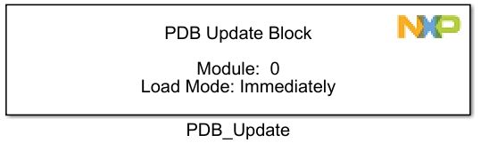
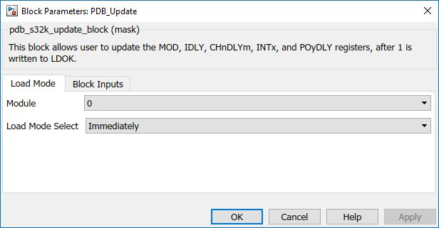
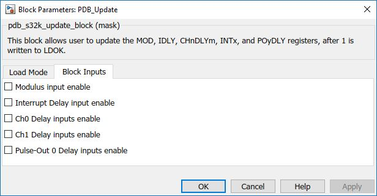

Programmable Delay Update Block
This block is used to update the MOD, IDLY, CHnDLYm registers, after 1 is written to LDOK.
Block Image
Inputs (if selected):
- Modulus (uint16)
- Interrupt Delay (uint16)
- Ch0 Delay (uint16)
- Ch1 Delay (uint16)
- Pulse-Out 0 Delay 0
- Pulse-Out 0 Delay 1
Outputs:
- None
Parameters and Dialog Box
The block dialog consists of the following tabs:
Load Mode
The Load Mode tab contains the following parameters:
PDB Module
Selects which PDB module to use.
Load Mode Select
Selects the mode to load the MOD, IDLY, CHnDLYm, INTx, and POyDLY registers.
- Immediately
- PDB Counter reaches MOD reg value
- Trigger input event is detected
- PDB Counter reaches the MOD register value or a trigger input event is detected
Block Inputs
Modulus Input Enable
When enabled input will show up on block.
Interrupt Delay Input Enable
When enabled input will show up on block.
Ch0 Delay Inputs Enable
When enabled input will show up on block.
Ch1 Delay Inputs Enable
When enabled input will show up on block.
Pulse-Out 0 Delay Inputs Enable
When enabled input will show up on block.
*Read Hardware Manual documentation to get more information.
Block Dependency
- Use PDB_Config Block to configure PDB
Block Miscellaneous Details:
- None
*Read Hardware Manual documentation to get more information.